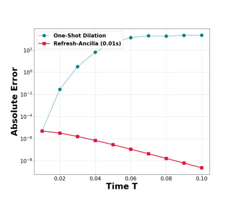
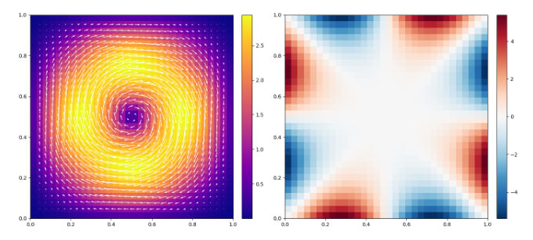
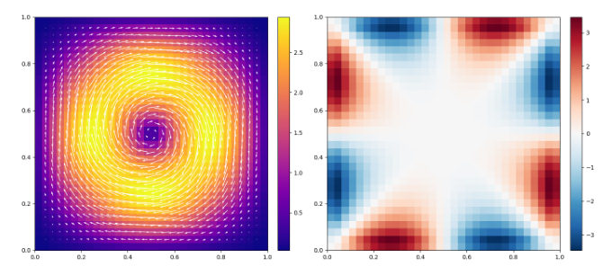
← Index · ← Previous · Next →
Authors: S. S. Onuchin, Ya. S. Lyakhova, L. D. Silakov, A. N. Rubtsov
Type: theory · Category: strongly correlated electrons · PDF: https://arxiv.org/pdf/2605.00211v1
Analysis basis: full PDF text, analyzed in chunks
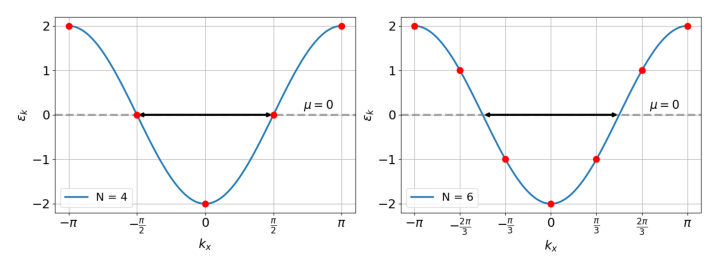
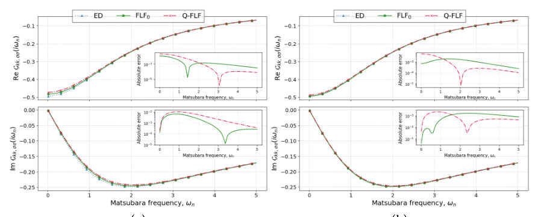
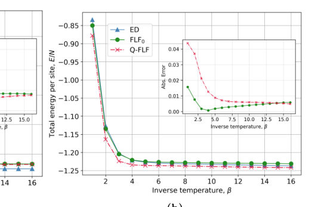
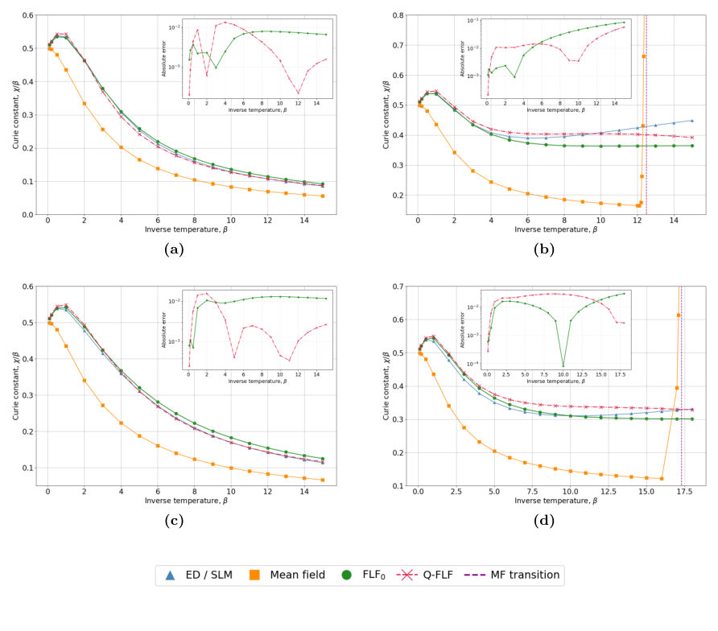
Summary. The paper introduces the Q-FLF method, an extension of the Fluctuating Local Field approach that incorporates quantum Matsubara modes to better describe collective excitations. It demonstrates that while low-frequency modes are sufficient for global thermodynamic quantities, higher-frequency modes are necessary for accurate single-particle spectra. This provides a selective tool for studying the impact of specific fluctuation channels in correlated systems.
Why it may be interesting. not directly relevant
Main problem. Developing an efficient theoretical approach to quantify the specific contributions of individual bosonic Matsubara modes (quantum fluctuations) to the observable properties of correlated fermion systems.
Main result. The proposed Q-FLF method shows that low-frequency bosonic modes quantitatively impact global observables like total energy and susceptibility, whereas an accurate description of single-particle Green's functions requires higher-frequency modes.
Method. The Quantum Fluctuating Local Field (Q-FLF) method, which extends the classical FLF approach by incorporating selected bosonic Matsubara modes into a Gaussian ensemble of fluctuating external fields.
Model / system. A one-dimensional (1D) Hubbard chain at half-filling with hopping constant t and on-site Coulomb interaction U, studied in finite sizes (N = 4, 6, 8, 10, 12).
Key observables. Matsubara Green's function, total energy per site, and antiferromagnetic susceptibility (specifically the Curie constant).
Important parameters / regimes. Interaction strength (U/t = 1), inverse temperature (beta), and system size (N).
Assumptions / limitations. The bosonic spectrum is truncated to include only the zeroth and +/- 1 Matsubara modes; the system is modeled using a minimal approximation of small-size chains to neglect spatial inhomogeneities.
Figures summary. Figure 1 shows the dispersion law and Fermi level for N=4 and N=6; Figure 2 compares the Green's function for Q-FLF, FLF0, and ED; Figure 3 compares total energy per site; Figure 4 shows the temperature dependence of the Curie constant.
Paper structure. The paper introduces the Q-FLF method, applies it to the 1D Hubbard model, evaluates its performance on global and single-particle observables, provides a diagrammatic interpretation of the expansion, and compares results against exact numerical benchmarks.
Collective excitations in fermionic systems play a crucial role in determining their physical properties. An important challenge is to develop efficient theoretical approaches for describing these excitations and their coupling to fermionic degrees of freedom. In this work, we revisit the problem of quantifying the contributions of individual bosonic modes of collective fluctuations to observable properties of correlated fermion systems within the framework of the Fluctuating Local Field (FLF) method. Whereas the auxiliary field in this method was previously considered only classically, we formulate its systematic extension termed Quantum FLF (Q-FLF) that incorporates selected bosonic Matsubara modes, thus tailoring it to description of quantum collective fluctuations. As a testbed, we apply the approach to a half-filled one-dimensional Hubbard chain and compute the Green's function, the total energy, and the antiferromagnetic susceptibility. Our results demonstrate that the proposed scheme enables an efficient and selective characterization of the contributions of individual bosonic modes. In particular, low Matsubara frequencies are found to have a quantitative impact on integrated observables such as total energy and antiferromagnetic susceptibility. At the same time, an accurate description of single-particle properties requires inclusion of higher-frequency bosonic modes.
Authors: Reuben Demirdjian, Thomas Hogancamp, Abeynaya Gnanasekaran, Amit Surana, Daniel Gunlycke
Type: theory · Category: quantum information and computing · PDF: https://arxiv.org/pdf/2605.00302v1
Analysis basis: full PDF text, analyzed in chunks
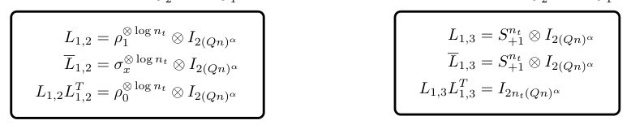
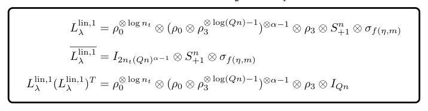
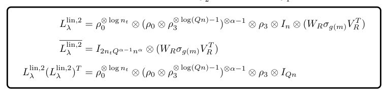
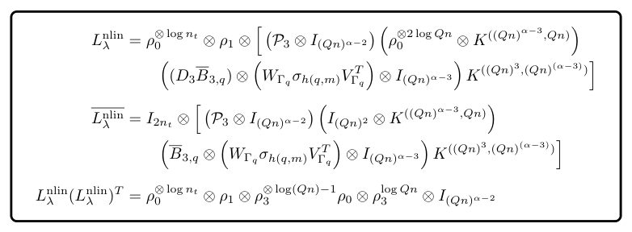
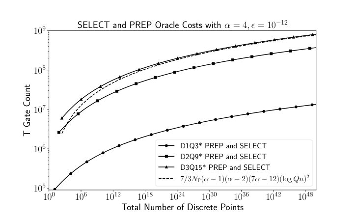
Summary. This paper presents a new method for loading nonlinear fluid dynamics data onto a quantum computer by using Carleman linearization and a novel unitary embedding technique. It achieves polylogarithmic scaling with respect to the simulation grid size, making it a significant step toward efficient quantum simulation of complex classical fluids.
Why it may be interesting. not directly relevant
Main problem. Developing an efficient quantum data loading strategy for simulating nonlinear dynamical systems, specifically addressing the high cost of decomposing Carleman-linearized matrices into a Linear Combination of Unitaries (LCU).
Main result. The authors introduce an LCNU-to-LCU strategy that embeds non-unitary terms into unitaries without increasing the number of terms, providing a framework that scales polylogarithmically with spatial and temporal discretization points for the 3D Lattice-Boltzmann Equation.
Method. The method uses Carleman linearization to transform nonlinear PDEs into linear systems, a 'judicious zero padding' technique to handle non-uniform submatrix sizes, and a unitary completion strategy to implement the resulting operators via quantum circuits.
Model / system. The primary application is the 3-dimensional Lattice-Boltzmann Equation (LBE), a discretized model for fluid dynamics involving streaming and collision operators (linear, quadratic, and cubic) on a periodic domain.
Key observables. T gate cost, number of LCU terms (Ns), condition number scaling, and Reynolds/Mach numbers.
Important parameters / regimes. Carleman truncation order (alpha), number of discrete velocities (Q), spatial grid points (n), and the Reynolds and Mach numbers.
Assumptions / limitations. The number of discrete velocities is a power of two; the density is approximately one; and the accuracy of the simulation depends on the truncation order alpha.
Figures summary. Figure 4.1 and 4.2 show quantum circuit embeddings for linearized terms; Figure 4.3 shows the most expensive circuit for the linear collision term; Table 1 summarizes resource costs for different lattice types (D1Q3, D2Q9, D3Q15).
Paper structure. The paper introduces the LCNU-to-LCU strategy, develops a generalized framework for Carleman linearized systems, applies this to the 3D LBE, provides explicit circuit constructions and resource estimations, and concludes with a condition number stability analysis.
Herein, we introduce a strategy to decompose an arbitrary square matrix into a linear combination of non-unitaries (LCNU) where each non-unitary term is embedded into a unitary matrix. The result is a linear combination of unitaries (LCU) with an equal number of terms as the LCNU. Using this approach, we construct a generalized LCU framework for any Carleman linearized autonomous dynamical system with a polynomial nonlinearity. This framework is then used to construct an LCU for the 3-dimensional Carleman linearized lattice Boltzmann equation (LBE) in which the number of terms scales like $N_s \sim \mathcal{O}(α^2 Q^2)$, where $α$ is the Carleman truncation order and $Q$ is the number of discrete velocities from the LBE. Importantly, $N_s$ is completely independent of both the number of temporal and spatial discretization points. Lastly, we provide an estimate of our LCNU strategy's T gate cost in conjunction with (1) PREP and SELECT block encoding oracles, and (2) the variational quantum linear solver. In the former, the T cost scales like $\mathcal{O}(α^3 Q^2 (\log_2 n)^2)$, where $n$ is the total number of spatial grid points across all dimensions. Next, the latter requires $N_s^2(\log_2 (2n_tn^α)+1)$ circuits per iteration, with a worst case T gate cost of $\mathcal{O}(α(\log_2 Qn)^2)$ among them. We, therefore, provide an efficient decomposition strategy useful for both fault-tolerant and variational approaches.
Authors: Jan Ljubas, Tim Byrnes
Type: theory · Category: quantum information and computing · PDF: https://arxiv.org/pdf/2605.00312v1
Analysis basis: full PDF text, analyzed in chunks
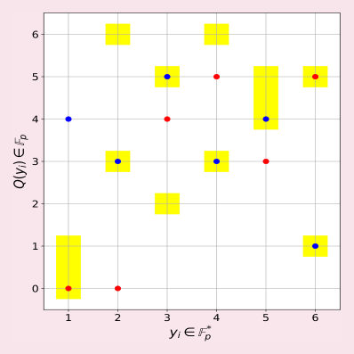
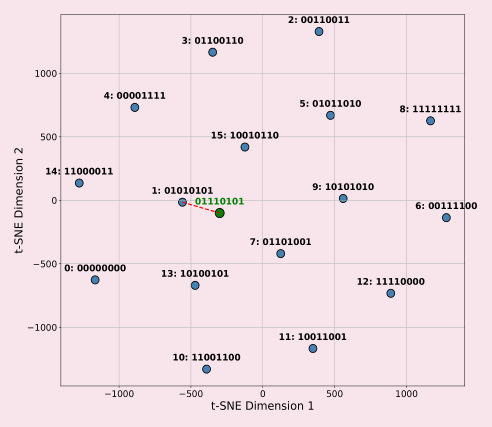
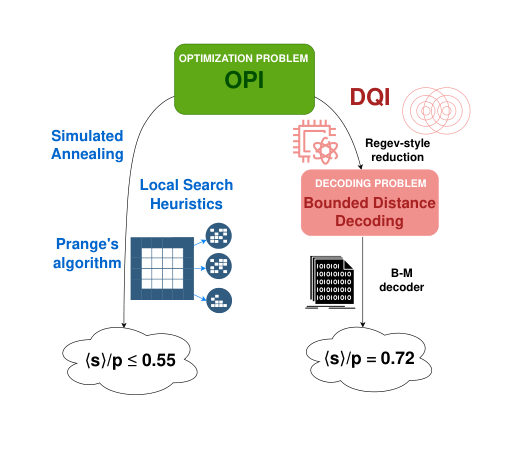
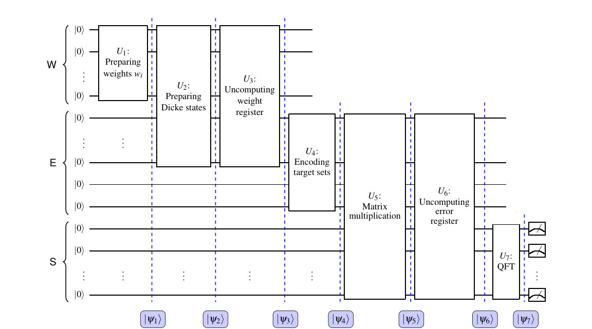
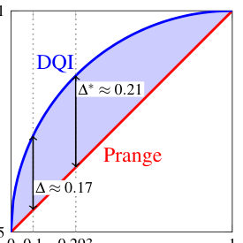
Summary. This paper introduces and reviews the Decoded Quantum Interferometry (DQI) algorithm, which leverages classical coding theory to solve optimization problems. It demonstrates a potential superpolynomial quantum speedup for specific polynomial intersection problems, offering a new paradigm for quantum advantage beyond standard Grover-like approaches.
Why it may be interesting. not directly relevant
Main problem. Achieving a scalable quantum advantage in solving combinatorial optimization problems, specifically the max-LINSAT and Optimal Polynomial Intersection (OPI) classes.
Main result. The paper demonstrates that the Decoded Quantum Interferometry (DQI) algorithm provides a superpolynomial quantum speedup for the OPI problem and achieves a higher expected constraint satisfaction rate compared to classical benchmarks like Prange's algorithm.
Method. The DQI algorithm uses a 7-step quantum circuit involving polynomial amplification, Dicke state preparation, and quantum Fourier transforms to transform optimization into a quantum decoding problem using coding theory.
Model / system. The framework utilizes finite fields (Galois fields) and linear codes (such as Reed-Solable and Reed-Muller) to model optimization constraints, specifically focusing on the max-LINSAT and OPI problem structures.
Key observables. Expected constraint satisfaction rate (s-bar), Hamming weight, and the performance gap between quantum and classical algorithms.
Important parameters / regimes. Field size (p), number of constraints (m), number of variables (n), polynomial degree (u), and the minimum distance (d) of the underlying codes.
Assumptions / limitations. The efficiency and orthonormality of the algorithm depend on the existence of efficient classical decoders and a sufficiently large minimum distance (d_perp) in the dual code.
Figures summary. Figure 1 visualizes the algorithm's foundation; Figure 2 shows a t-SNE visualization of decoding; Figure 3 compares classical vs. quantum optimization approaches; Figure 4 details the 7-step DQI circuit; Figure 5 plots satisfaction rate vs. problem scale; Figure 6 illustrates a bivariate mOPI instance.
Paper structure. The paper provides a self-contained review covering the mathematical foundations of Galois fields and coding theory, defines the max-LINSAT and OPI optimization problems, details the step-by-step DQI algorithm architecture, and concludes with performance comparisons and extensions to multivariate and non-diagonal Hamiltonians.
Attaining a quantum speedup in solving practically useful optimization problems has been one of the holy grails in the field of quantum computing. While prior approaches have demonstrated speedups for certain structured problem classes, establishing a clear and scalable advantage on broadly useful practical optimization problems remains challenging. Recently, a new approach to solving the max-LINSAT class of optimization problems has emerged, called Decoded Quantum Interferometry (DQI). In DQI, a combination of techniques rooted in (classical) coding theory and interferometry are used to obtain the solution of max-LINSAT. In the special problem instance of the optimal polynomial intersection (OPI) problem, strong evidence exists to show that an superpolynomial speedup exists over the best classical methods in obtaining an approximate solution. In this review, we give a self-contained description of DQI and the necessary background to understand the algorithm. Specifically, we give the essentials of Galois fields, optimization problems such as max-LINSAT and OPI, and coding theory, followed by a step-by-step walkthrough of the quantum algorithm and its operating principle.
Authors: Emma Andrews, Nahyeon Kim, Prabhat Mishra
Type: theory · Category: quantum information and computing · PDF: https://arxiv.org/pdf/2605.00747v1
Analysis basis: full PDF text, analyzed in chunks
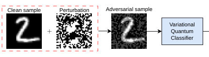
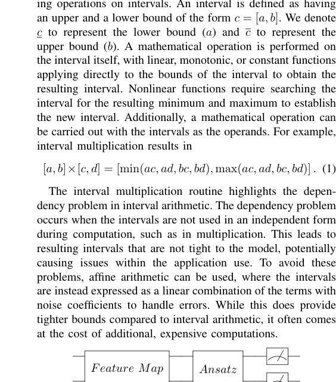
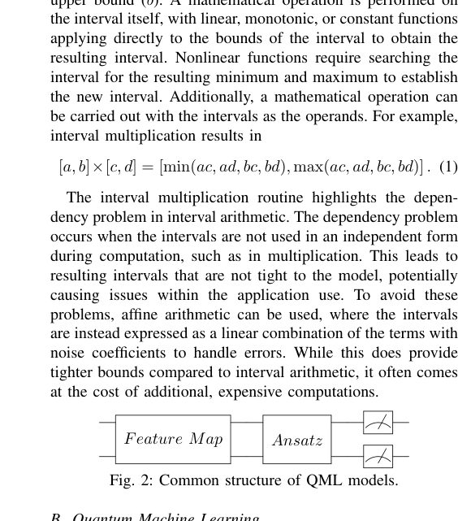
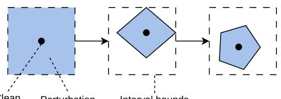
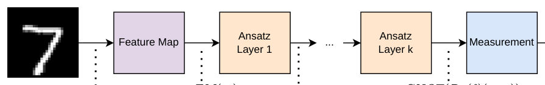
Summary. This paper introduces a new certified training routine called Quantum Interval Bound Propagation (QIBP) to make quantum neural networks robust against adversarial attacks. By propagating mathematical bounds through the quantum circuit, the method provides a formal guarantee that predictions will remain correct within a specified noise range. The study highlights that affine arithmetic is more effective than standard interval arithmetic for maintaining tight bounds in complex quantum models.
Why it may be interesting. not directly relevant
Main problem. Variational Quantum Classifiers (VQCs) are vulnerable to adversarial attacks where small input perturbations cause incorrect predictions, and there is a lack of certified training methods to guarantee robustness in the quantum domain.
Main result. The authors propose Quantum Interval Bound Propagation (QIBP), demonstrating that using affine arithmetic provides tighter bounds and higher certified accuracy than interval arithmetic, and that margin loss improves decision boundary robustness.
Method. The method propagates upper and lower bounds of input intervals through the quantum circuit layers (feature map, ansatz, and measurement) using interval and affine arithmetic to establish worst-case logits.
Model / system. The study uses Variational Quantum Circuits (VQCs) consisting of $n$ qubits, featuring an amplitude or angle embedding feature map, parameterized rotation gates ($R_Y, R_X$), and entangling gates (CNOT).
Key observables. Logits (expectation values of the Pauli-Z operator), test accuracy, certified accuracy, and PGD (Projected Gradient Descent) accuracy.
Important parameters / regimes. Perturbation magnitude (epsilon), weighting hyperparameter (kappa), number of qubits, number of layers, and number of classes.
Assumptions / limitations. Assumes model layers can be treated via interval or affine arithmetic (linearity/monotonicity of gates) and uses Chebyshev approximation for nonlinear transformations.
Figures summary. Figure 1 shows an adversarial attack on MNIST; Figure 2 shows the QML architecture; Figure 3 shows a specific two-layer ansatz; Figure 4 illustrates interval propagation; Figure 5 shows the QIBP framework; Figure 6 plots accuracy trends vs. qubit count.
Paper structure. The paper introduces the problem of adversarial vulnerability in QML, presents the QIBP framework using interval and affine arithmetic, evaluates the method using various loss functions and architectures on MNIST-like datasets, and analyzes the impact of model complexity and hyperparameters.
Quantum machine learning is a promising field for efficiently learning features of a dataset to perform a specified task, such as classification. Interval bound propagation (IBP) is a popular certified training method in classical machine learning, where the lower and upper bounds are tracked throughout the model. These bounds are used during training to ensure that the model is certified to predict the correct label even under adversarial perturbations. While IBP is successful in classical domain, there are limited certified training efforts in quantum domain. In this paper, we present quantum interval bound propagation (QIBP) to establish a certified training routine for quantum machine learning, certifying the accuracy of models under adversarial perturbations. We implement QIBP using both interval and affine arithmetic to explore the tradeoffs between the two implementations in terms of accuracy and other design considerations. Extensive evaluation demonstrates that the resulting certified trained models have robust decision boundaries, guaranteed to predict the correct class for the samples within the trained adversarial robustness bounds.
Authors: Hsuan-Cheng Wu, Xiantao Li
Type: theory · Category: quantum information and computing · PDF: https://arxiv.org/pdf/2605.00794v1
Analysis basis: full PDF text, analyzed in chunks



Summary. This paper proposes a new quantum algorithm for simulating constrained dynamical systems like the Stokes equations by embedding them into a larger, unitary-compatible Hilbert space. It shows that by using quantum Zeno dynamics and low-energy subspace techniques, one can potentially achieve better scaling with respect to mesh refinement than classical projection methods.
Why it may be interesting. not directly relevant
Main problem. Developing an efficient quantum algorithmic framework for simulating constrained linear Differential-Algebraic Equations (DAEs), specifically addressing the non-Hermitian nature and the mesh-dependent scaling of incompressibility constraints in fluid dynamics.
Main result. The authors establish a dilation framework that maps DAEs to a projected Schrödinger-type dynamics, demonstrating a potential asymptotic advantage in the time-evolution scaling (h^{-5/2} vs h^{-3} in 2D) for the unsteady Stokes equations.
Method. The framework utilizes unitary dilation, Quantum Singular Value Transformation (QSVT) for projector construction, and block-encoding, while leveraging the Quantum Zeno effect and low-energy subspace simulation.
Model / system. The primary application is the unsteady incompressible Stokes flow, modeled as a constrained DAE where the velocity field evolves via a differential equation and pressure acts as a Lagrange multiplier to enforce the divergence-free constraint.
Key observables. Velocity and pressure fields of the fluid flow.
Important parameters / regimes. Spatial mesh size (h), simulation time (t), precision (epsilon), and the spectral gap of the constraint operator.
Assumptions / limitations. Assumes the constraint operator has full row rank, the existence of a spectral gap in the constraint matrix, and the availability of sparse block-encodings for the differential operators.
Figures summary. Figure 1 shows a commutative diagram for dilation/reduction equivalence; Figure 2 compares error between dilation and ancilla refreshment; Figure 3 and 4 display the reconstructed velocity and pressure fields on a 32x32 grid.
Paper structure. The paper introduces the DAE problem, develops a mathematical dilation framework using Quantum Zeno dynamics, applies this to the discretized Stokes equations, provides a complexity analysis for the simulation, and concludes with a comparison to classical methods.
Differential-algebraic equations (DAEs) arise naturally in constrained dynamical systems, but their algebraic constraints and hidden compatibility conditions make them more subtle than standard ordinary differential equations. This paper initiates a quantum-algorithmic study of constrained linear DAEs. We introduce a dilation framework that embeds the generally non-Hermitian constrained evolution into a projected Schrödinger-type dynamics on an enlarged Hilbert space, \[ i\frac{d}{dt}Ψ(t)=P\tH PΨ(t), \] where $\tH$ is Hermitian and $P$ is the orthogonal projector onto the lifted constraint subspace. This identifies the DAE evolution with a quantum Zeno-type dynamics and enables the use of block encodings, QSVT-based projector construction, and Hamiltonian simulation. We apply the framework to structure-preserving discretizations of the unsteady Stokes equations, where the pressure enforces the discrete incompressibility constraint. We derive the corresponding projected Hamiltonian formulation, identify low-energy spectral cutoffs motivated by solution smoothness, and discuss the resulting quantum simulation cost in comparison with classical projection-type methods. The results provide a first step toward understanding the potential intersection of quantum algorithms, DAEs, and constrained PDE dynamics.
Authors: Andreas Juul Bay-Smidt, Nina Glaser, Marcel D. Fabian, Earl T. Campbell, Nick S. Blunt, Gemma C. Solomon
Type: theory · Category: quantum information and computing · PDF: https://arxiv.org/pdf/2605.00745v1
Analysis basis: full PDF text, analyzed in chunks
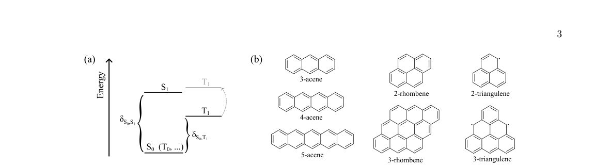
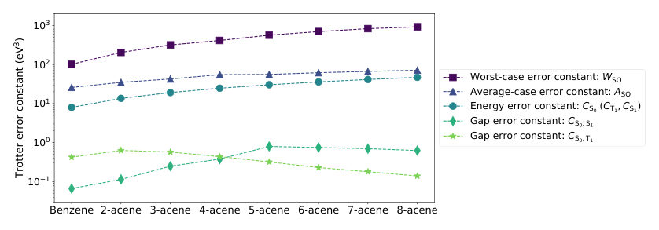
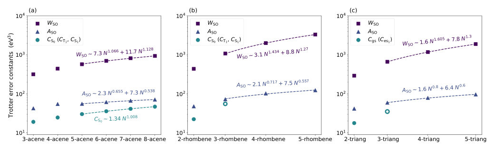
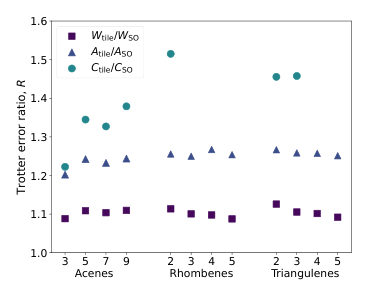
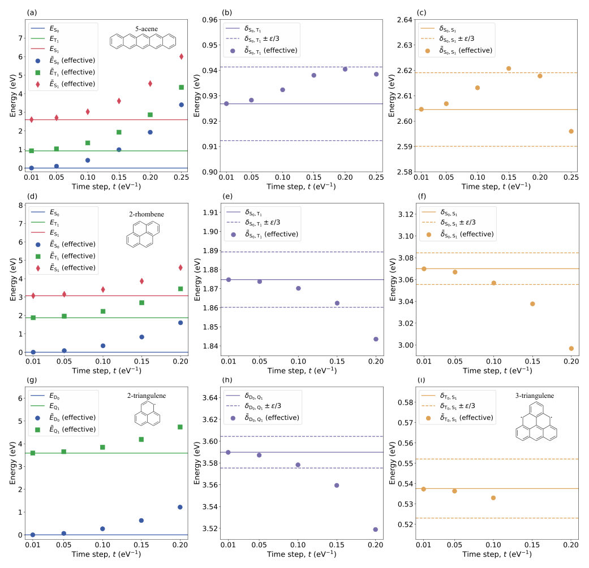
Summary. This paper demonstrates that for quantum simulations of nanographenes, the Trotter error in energy gaps is much smaller than the error in absolute energies. This error cancellation allows for significantly shallower quantum circuits when calculating chemically relevant excitation energies. The work provides a roadmap for using scalable, intermediate-scale problems to bridge the gap toward large-scale fault-tolerant quantum computing.
Why it may be interesting. It provides a critical insight into how application-specific error analysis (focusing on energy gaps rather than absolute energies) can drastically lower the hardware threshold for practical quantum chemistry simulations.
Main problem. The massive resource requirements for fault-tolerant quantum simulation of molecules and materials, specifically the overestimation of Trotter errors when using worst-case analysis for chemical applications.
Main result. Discovery of a Trotter error cancellation phenomenon where errors in energy gaps are significantly smaller than absolute energy errors, allowing for an order-of-magnitude reduction in circuit depth for Quantum Phase Estimation.
Method. A combination of Trotterized quantum simulation analysis, tensor-network-based spectral analysis, and Time-Dependent Density Matrix Renormalization Group (TD-DMRG) to evaluate various error types.
Model / system. The Pariser-Parr-Pople (PPP) model applied to the pi-systems of nanographenes, including acenes (1D), rhombenes (2D), and triangulenes (2D).
Key observables. Energy gaps (vertical excitation energies), absolute energy eigenvalues, and Trotter error types (worst-case, average-case, energy, and gap errors).
Important parameters / regimes. Chemical accuracy (approx. 0.04354 eV), Trotter time step (t), and system size up to 140 spin orbitals.
Assumptions / limitations. The analysis focuses on the second-order split-operator Trotter scheme and the semi-empirical PPP model; it assumes high overlap between true and effective eigenstates.
Figures summary. Figures illustrate energy diagrams and nanographene structures, plots of various Trotter error types and their scaling with system size, and comparisons between exact and effective energies/gaps.
Paper structure. The paper introduces the scalability problem, proposes nanographenes as a bridge to large-scale FTQC, performs a rigorous multi-type error analysis, demonstrates error cancellation in energy gaps, and concludes with resource estimation for QPE.
Fault-tolerant quantum computing is a promising tool for simulating molecules and materials, but frequently-considered applications require substantial resources, and the gap between hardware capabilities and requirements remains significant. We propose quantum simulation of nanographene $π$-systems as relevant and scalable problems to span the gap between early and large-scale fault-tolerant quantum computing. We examine the efficiency of Trotterized quantum simulation, present a detailed analysis of worst-case, average-case and energy eigenvalue Trotter errors, and show that these Trotter error estimates vary by orders of magnitude. Trotter eigenvalue errors are obtained from a novel tensor-network-based approach which allows spectral analysis of product formulas for systems beyond brute-force calculation. Notably, we observe a Trotter error cancellation phenomenon whereby the Trotter error for energy differences between low-lying eigenstates is significantly smaller than the Trotter error for absolute energies, resulting in approximately an order of magnitude circuit depth reduction for quantum phase estimation calculation of energy gaps. This is a significant result because for most chemical applications, only energy differences are of practical relevance. We estimate that calculation of energy gaps to chemical accuracy between the ground- and excited-states within the Pariser--Parr--Pople model for large 2D nanographenes (up to 140 spin orbitals) requires circuits with $< 3.2 \times 10^7$ Toffoli gates. This work shows that considering details of chemically-relevant applications and exploiting error cancellation can lead to substantial reductions in resource requirements.
Authors: Kyra H. M. Klos, Jan Disselhoff, Michael Wand, Karin Everschor-Sitte, Friederike Schmid
Type: theory · Category: disordered systems and neural networks · PDF: https://arxiv.org/pdf/2605.00732v1
Analysis basis: full PDF text, analyzed in chunks
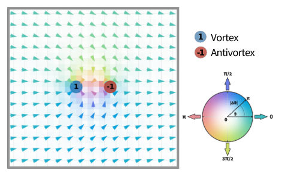
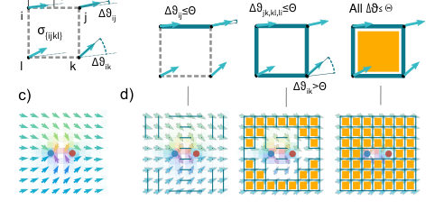
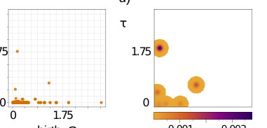
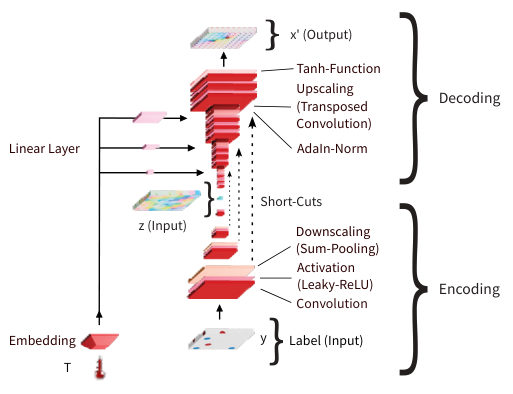
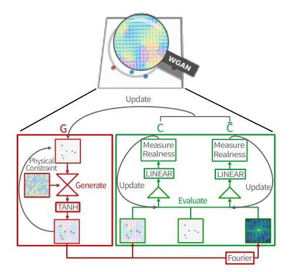
Summary. This paper presents a generative neural network approach to 'back-map' macroscopic topological defect patterns to their underlying microscopic spin configurations. By incorporating physical constraints and Fourier-space information, the model accurately captures essential thermodynamic properties and long-range correlations in the 2D XY model. It demonstrates how machine learning can bridge the gap between multiscale topological features and microscopic physics.
Why it may be interesting. not directly relevant
Main problem. The challenge of reconstructing microscopic spin configurations from macroscopic topological charge distributions (vortices) using generative models.
Main result. A physics-informed conditional Wasserstein GAN (cWGAN) successfully reconstructs spin configurations that accurately reproduce magnetization, susceptibility, and spin-spin correlations, though it struggles with higher-order energy fluctuations like specific heat.
Method. An extended WGAN architecture using a U-Net generator with AdaIN for temperature embedding and a dual-critic system (real-space and Fourier-space) to enforce physical and spectral constraints.
Model / system. The two-dimensional (2D) XY model on a square lattice, characterized by the Berezinskii-Kosterlitz-Thouless (BKT) phase transition and topological defects (vortex-antivortex pairs).
Key observables. Magnetization, magnetic susceptibility, helicity modulus (spin stiffness), specific heat, spin-spin correlation functions, and topological descriptors (Minkowski functionals, Betti numbers, and persistence diagrams).
Important parameters / regimes. Temperature (T), defect-pair distance (d_nu), winding number distribution (y), and lattice size (L).
Assumptions / limitations. The continuum approximation for energy is valid only outside defect cores; the model is tested primarily in the regime below the BKT transition.
Figures summary. Figures illustrate the vortex-antivortex structure, the construction of cubical complexes and persistence images, the U-Net and critic architectures, training progress of thermodynamic observables, and comparisons of generated vs. simulated physical and topological metrics.
Paper structure. The paper introduces the multiscale reconstruction problem, describes the 2D XY model and the cWGAN architecture (including Fourier-space critics), details the topological data analysis (TDA) pipeline, presents validation results via thermodynamic and geometric observables, and discusses limitations regarding energy fluctuations and critical behavior.
Localized topological defects inherently possess a multiscale character. While their microstructure configuration depends on the specific physical system, their topological features and mutual interactions can be described on the macroscale in terms of a particle representation. However, determining the physical properties associated with a given defect pattern often requires knowledge of the underlying microscopic structure. In this work, we extend a Wasserstein generative adversarial neural network by incorporating physical constraints and Fourier-space information to generate microscopic spin configurations consistent with prescribed macroscopic patterns and thermodynamic parameters. Using the two-dimensional XY model as a test case, where vortex-antivortex pairs act as long-range interacting defects, we show that the model generates spin configurations that accurately reproduce magnetization, susceptibility, helicity modulus, and spin-spin correlations over a wide range of temperatures below the Kosterlitz-Thouless transition. At the same time, deviations in the specific heat reveal limitations in reproducing higher order energy fluctuations. A complementary analysis based on topological data analysis uncovers subtle differences in global spin-correlation structures at near critical temperatures that are not apparent from conventional correlation functions alone. These results demonstrate both the promise and current limitations of generative approaches for multiscale studies of defect-dominated spin systems and at the same time highlight topological methods as valuable tools for characterizing critical behavior.
Authors: Daniel Margineda, David Caldevilla-Asenjo, Yuriy Yerin, Covadonga Álvarez-García, Andrei Mazanik, Maxim Ilyn, Celia Rogero, Luis E. Hueso, F. Sebastian Bergeret, Marco Gobbi
Type: both · Category: strongly correlated electrons · PDF: https://arxiv.org/pdf/2605.00477v1
Analysis basis: full PDF text, analyzed in chunks
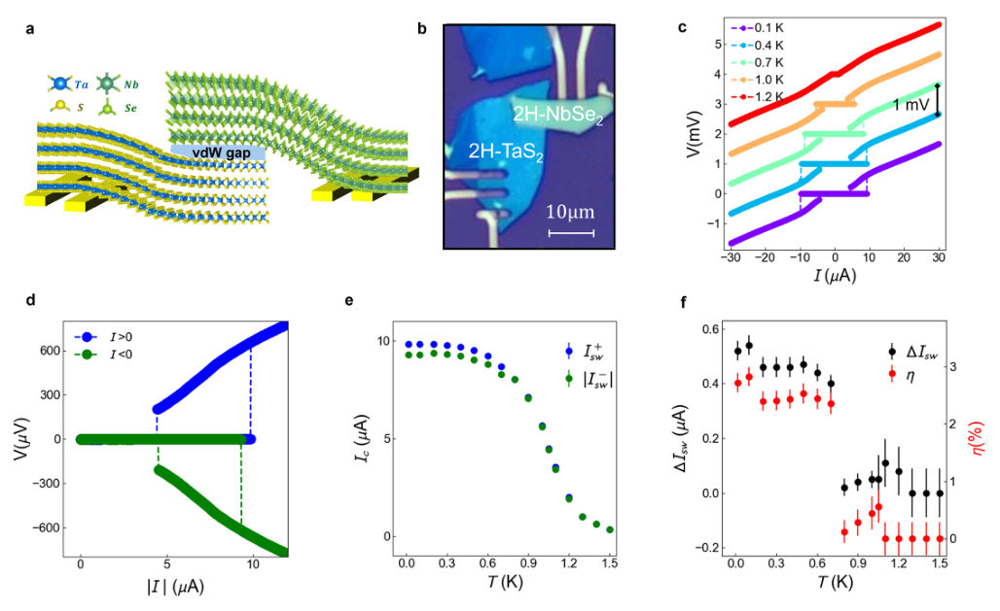
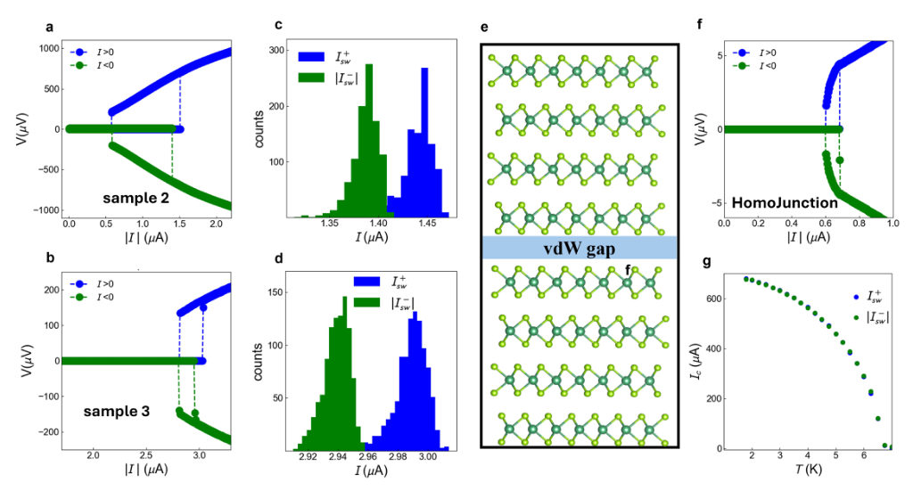
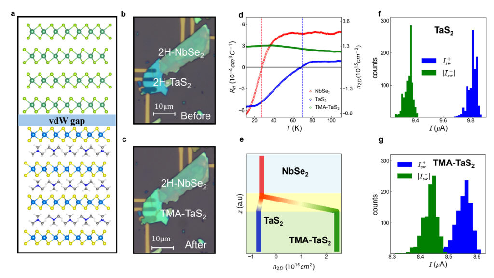
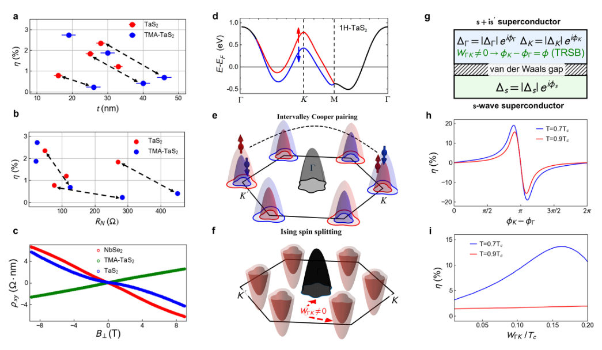
Summary. The researchers demonstrate a zero-field Josephson diode effect in TaS2/NbSe2 van der Waals junctions, providing evidence for intrinsic time-reversal-symmetry breaking. By ruling out extrinsic factors through intercalation and homojunction controls, they attribute the nonreciprocity to a multiband superconducting state with an anomalous phase difference. This work highlights how interband scattering can drive complex, non-sinusoidal current-phase relations.
Why it may be interesting. not directly relevant
Main problem. Determining whether the observed zero-field Josephson diode effect in 2H-TaS2/2H-NbSe2 heterostructures arises from intrinsic time-reversal-symmetry breaking (TRSB) or extrinsic mechanisms like strain or interface effects.
Main result. The study identifies the zero-field Josephson nonreciprocity as an intrinsic signature of a multiband superconducting state in TaS2, where interband scattering stabilizes a TRSB s+is' state.
Method. Experimental measurements of switching-current statistics and Hall transport in van der Waals junctions are combined with a theoretical framework using the quasiclassical Usadel equations.
Model / system. The system consists of 2H-TaS2/2H-NbSe2 van der Waals Josephson junctions. The theoretical model describes a multiband superconductor with an anomalous interband phase difference driven by interband scattering.
Key observables. Diode efficiency (eta), switching-current probability distributions (SCPD), critical currents (Ic+ and Ic-), and nonlinear Hall transport.
Important parameters / regimes. Interband scattering amplitude (W_GammaK), anomalous phase difference (phi), and the Stewart-McCumber parameter (beta_c).
Assumptions / limitations. The theoretical model assumes a minimal framework in the dirty limit (Usadel equations) and the short-junction limit, treating the junction as quasi-one-dimensional.
Figures summary. Figures show the temperature evolution of diode efficiency, switching-current statistics, evidence of reciprocal transport in homojunctions, tests ruling out extrinsic magnetic/vortex effects, and theoretical calculations of efficiency vs. interband scattering and phase.
Paper structure. The paper introduces the problem of TRSB in spin-singlet superconductors, presents experimental evidence of the Josephson diode effect in TaS2/NbSe2 junctions, uses control experiments (homojunctions and intercalation) to rule out extrinsic causes, provides a theoretical model based on interband scattering, and concludes with the identification of an intrinsic multiband TRSB state.
Superconductors that spontaneously break time-reversal symmetry host complex order parameters and are widely regarded as a hallmark of unconventional superconductivity. Whether such symmetry breaking can also arise in superconductors with nominally isotropic spin-singlet pairing remains an open question. Here we report a zero-field Josephson diode effect in noncentrosymmetric 2H-TaS2/2H-NbSe2 van der Waals junctions. The diode efficiency shows no systematic correlation with supercurrent amplitude, TaS2 thickness, or normal-state resistance, arguing against simple extrinsic, purely interfacial, or transparency-driven mechanisms. Time-reversal-symmetric scenarios are further tested using symmetry-controlled and molecule-intercalated control devices, in which the nonreciprocal response is absent or strongly reduced. Normal-state Hall transport in TaS2 exhibits a nonlinear response consistent with multiband correlated electronic states. Within a Josephson framework, our modelling shows that interband scattering acts as a phase-locking mechanism generating an intrinsic anomalous phase difference and a nonsinusoidal asymmetric current-phase relation, leading to finite zero-field rectification. Together, zero-field Josephson nonreciprocity and nonlinear Hall transport provide complementary evidence for a multiband superconducting phase structure in 2H-TaS2, consistent with intrinsic time-reversal-symmetry breaking.
Authors: Olivier Witteveen, Marianne Bauer
Type: theory · Category: statistical mechanics · PDF: https://arxiv.org/pdf/2605.00813v1
Analysis basis: full PDF text, analyzed in chunks
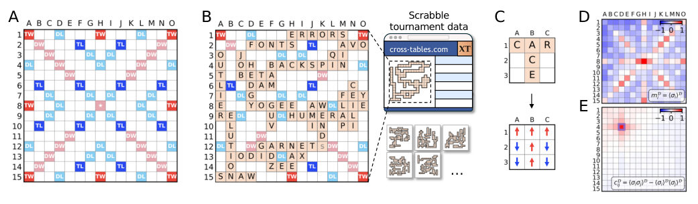
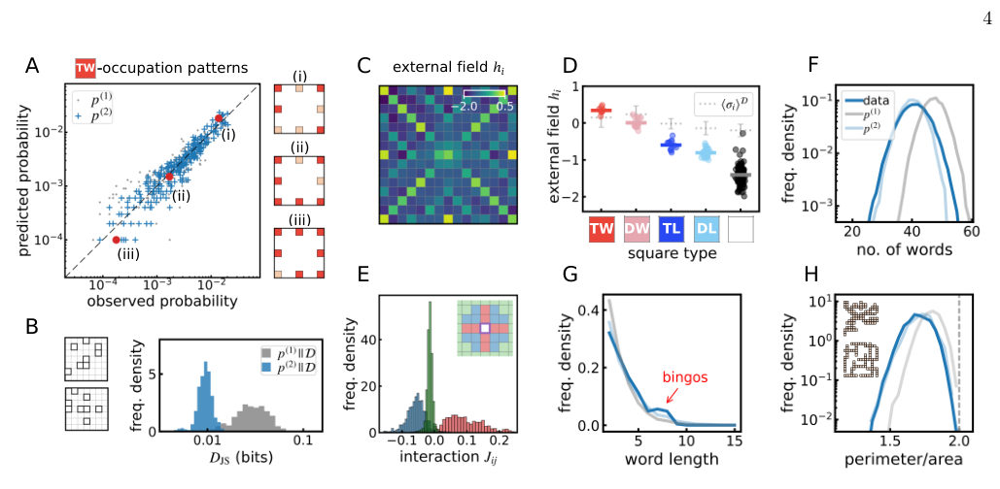
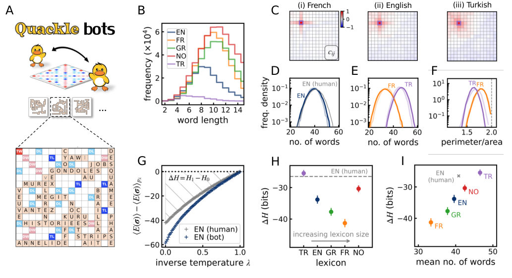
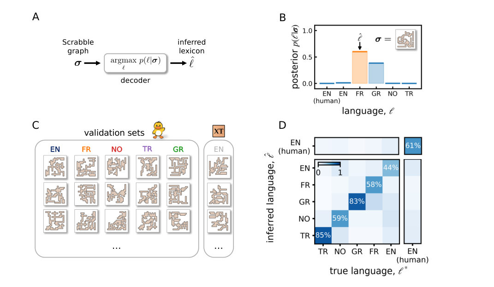
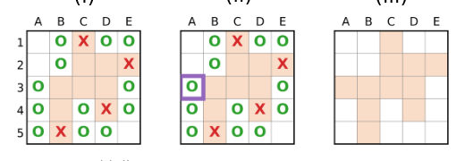
Summary. This paper applies the maximum entropy principle and Ising-like models to analyze the structural patterns of Scrabble boards. It demonstrates that a simple pairwise model can capture complex geometric features and even identify the underlying language of a game based solely on tile placement patterns.
Why it may be interesting. not directly relevant
Main problem. Determining if a statistical mechanics framework can describe the patterns, strategies, and linguistic features of Scrabble board configurations and distinguish between different languages.
Main result. A pairwise maximum entropy model effectively captures Scrabble board statistics, including higher-order correlations and geometric features, and can correctly identify the source language of a board configuration without knowing the specific letters.
Method. The authors use a maximum entropy approach with a pseudolikelihood method for parameter estimation and thermodynamic integration to calculate entropy differences.
Model / system. The system is a Scrabble graph represented as a 15x15 square lattice of spins (sigma_i in {-1, +1}). The model is an Ising-like Hamiltonian: E(sigma) = -sum J_ij * sigma_i * sigma_j - sum h_i * sigma_i.
Key observables. Mean square occupation, pairwise correlations, word-length statistics, geometric features (radius of gyration, perimeter-to-area ratio, number of holes), and Jensen-Shannon divergence.
Important parameters / regimes. External fields (h_i) representing spatial bias and pairwise interactions (J_ij) representing word placement constraints.
Assumptions / limitations. The configuration space is restricted to connected graphs with a permissible number of tiles; the posterior calculation assumes all languages are initially equiprobable.
Figures summary. Figure 1 shows the Scrabble board and spin representation; Figure 2 compares predicted vs. observed occupation and correlations; Figure 3 displays geometric observables and covariance matrices across languages; Figure 4 illustrates the language decoding framework and confusion matrix.
Paper structure. The paper introduces the Scrabble graph system, defines the pairwise maximum entropy model, demonstrates model accuracy using occupation and correlation data, extends the analysis to geometric and linguistic features, and concludes with a Bayesian framework for language identification.
The crossword-like patterns of tiles in Scrabble form connected graphs of occupied sites on a square lattice. We find the most structureless description that reproduces means and covariances observed in real Scrabble games by adapting a maximum entropy approach to connected graphs. This pairwise model captures the data well, and predicts word-length statistics and geometric features of the Scrabble graphs correctly; in addition, the parameters of this model are interpretable and allow us to understand Scrabble playing strategies. Using this pairwise model, we calculate entropy differences and distinguishability of Scrabble graphs across languages, without having access to the letters on the tiles. Notably, we find that the entropy is predicted better by strategic gameplay -- such as word length on the board -- than lexicon size. Finally, we find that we can use the pairwise model to correctly assign Scrabble graphs to languages, avoiding explicit feature selection and at relatively low computational cost.
Authors: Kyohei Nakamura, Youichi Yanase
Type: theory · Category: strongly correlated electrons · PDF: https://arxiv.org/pdf/2605.00601v1
Analysis basis: full PDF text, analyzed in chunks
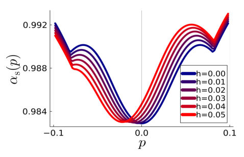
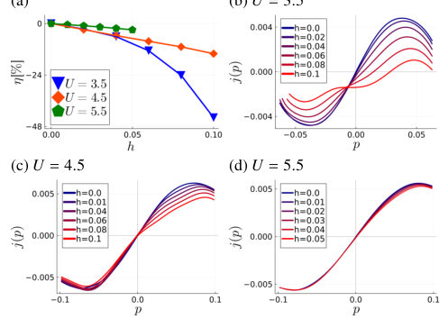
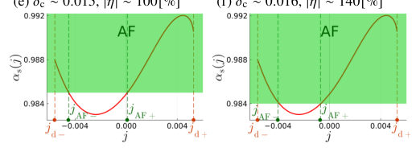
Summary. This paper investigates how strong electron correlations change the mechanism of the superconducting diode effect. It discovers that while correlations suppress the standard mechanism, they introduce a new effect where supercurrent induces antiferromagnetic order, allowing for highly efficient or even perfect diode behavior.
Why it may be interesting. not directly relevant
Main problem. Understanding the microscopic mechanism of the Superconducting Diode Effect (SDE) in strongly correlated electron systems and how electron correlations and quantum criticality alter it compared to weak-coupling theories.
Main result. Electron correlations suppress the conventional intrinsic SDE, but a new correlation-driven mechanism emerges where supercurrent nonrecipally induces antiferromagnetic order, potentially enabling perfect diode efficiency.
Method. The authors use the Dyson-Gor'kov equations within the Fluctuation Exchange (FLEX) approximation to self-consistently calculate superconducting and magnetic properties.
Model / system. A 2D Rashba-Zeeman-Hubbard model on a square lattice, representing d-wave superconductors near an antiferromagnetic quantum critical regime.
Key observables. Supercurrent j(p), superconducting diode efficiency (eta), critical currents (jc+ and jc-), and the Stoner factor.
Important parameters / regimes. Onsite Coulomb interaction (U), magnetic field (h), electron density (n=0.85), and temperature (T=0.005).
Assumptions / limitations. The study uses the FLEX approximation and assumes the system is well-described by the Rashba-Zeeman-Hubbard model; it also focuses on the low-field regime (h < 0.1).
Figures summary. Figure 1(a) shows diode efficiency dependence on magnetic field for various U values; Figures 1(b)-(d) show supercurrent dependence on Cooper pair momentum.
Paper structure. The paper introduces the SDE problem, describes the Rashba-Zeeman-Hubbard model and FLEX method, presents results on the suppression of intrinsic SDE, details the emergent nonreciprocal magnetism mechanism, and concludes with the implications for correlated superconductors.
The superconducting diode effect (SDE), characterized by a nonreciprocal critical current in superconductors, has recently been observed in strongly correlated electron systems and near quantum criticality, pointing to unconventional mechanisms beyond weak-coupling theories. Here we investigate the SDE in the Rashba-Zeeman-Hubbard model, which captures $d$-wave superconductivity in an antiferromagnetic quantum critical regime, using the Dyson-Gor'kov equation with the fluctuation exchange approximation. We show that electron correlations suppress the conventional intrinsic SDE arising from depairing currents. More importantly, a supercurrent nonreciprocally induces antiferromagnetic order, which fundamentally governs the critical current and enables perfect diode efficiency. Our results reveal a previously unrecognized correlation-driven mechanism of the SDE and establish strongly correlated superconductors as a platform for superconducting diode physics.
Authors: Sai Niranjan Ramachandran, Suvrit Sra
Type: both · Category: disordered systems and neural networks · PDF: https://arxiv.org/pdf/2605.00414v1
Analysis basis: full PDF text, analyzed in chunks
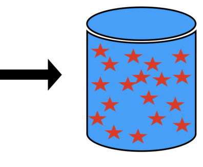
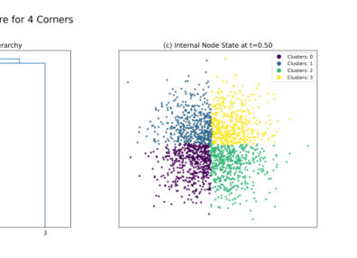
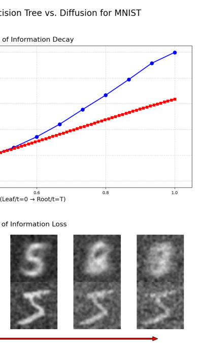
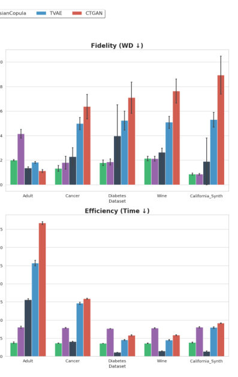
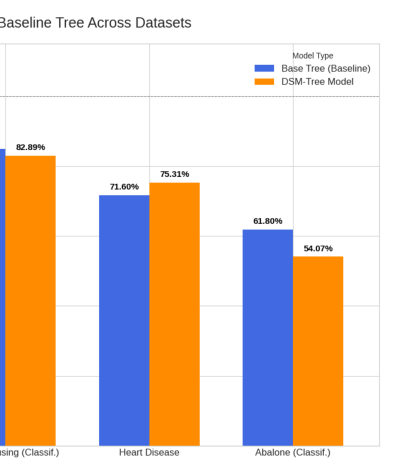
Summary. This paper provides a mathematical unification of decision trees and diffusion models, showing they are different limits of the same underlying optimization principle. It introduces new methods, TREEFLOW and DSM-TREE, which leverage this connection to achieve faster and more accurate generative modeling for tabular data.
Why it may be interesting. not directly relevant
Main problem. The paper seeks to bridge the mathematical and conceptual gap between discrete, hierarchical decision trees and continuous, dynamic diffusion models.
Main result. The authors establish a formal bidirectional mapping between trees and flows, proving that gradient boosting is an asymptotically optimal solver for a unified objective called Global Trajectory Score Matching (GTSM).
Method. The work uses dyadic refinement to transform discrete partitions into continuous-time SDEs and introduces two new algorithms: TREEFLOW for generative tabular data and DSM-TREE for tree-to-neural network distillation.
Model / system. The framework unifies discrete-time Markov processes (decision trees) and continuous-time stochastic differential equations (diffusion models) through a shared optimization principle.
Key observables. TSTR (Train Set Test Re-use) accuracy, Wasserstein distance, Correlation Error, Shannon entropy decay, and runtime efficiency.
Important parameters / regimes. Tree depth (D), number of leaves (L), feature dimensionality (d), and the continuous-time limit of dyadic refinement.
Assumptions / limitations. Assumes entropically homogeneous SDEs, well-separated modes in initial distributions, and that intermediate tree splits do not change conditional densities at original levels.
Figures summary. Visual metaphors of tree-to-flow correspondence; dendrograms showing discovered hierarchies in diffusion models; entropy decay curves comparing trees and diffusion; and performance benchmarks for TREEFLOW and DSM-TREE.
Paper structure. The paper begins with a theoretical unification of trees and flows via GTSM, followed by proofs of convergence and complexity for the proposed algorithms, and concludes with experimental validation on synthetic and tabular datasets.
Decision trees and diffusion models are ostensibly disparate model classes, one discrete and hierarchical, the other continuous and dynamic. This work unifies the two by establishing a crisp mathematical correspondence between hierarchical decision trees and diffusion processes in appropriate limiting regimes. Our unification reveals a shared optimization principle: \emph{Global Trajectory Score Matching (GTSM)}, for which gradient boosting (in an idealized version) is asymptotically optimal. We underscore the conceptual value of our work through two key practical instantiations: \treeflow, which achieves competitive generation quality on tabular data with higher fidelity and a 2\times computational speedup, and \dsmtree, a novel distillation method that transfers hierarchical decision logic into neural networks, matching teacher performance within 2\% on many benchmarks.
Authors: Arun Debray, Cameron Krulewski, Luuk Stehouwer
Type: theory · Category: strongly correlated electrons · PDF: https://arxiv.org/pdf/2605.00316v1
Analysis basis: full PDF text, analyzed in chunks
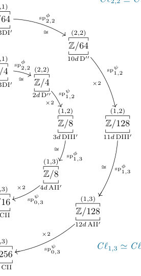
Summary. This paper provides a rigorous mathematical framework to understand how the periodic classification of topological phases (the Bott clock) transforms into an expanding spiral when particle interactions are introduced. It successfully links free fermion K-theory to interacting field theories, explaining the exponential growth of topological phases in higher dimensions.
Why it may be interesting. not directly relevant
Main problem. The paper aims to construct a homotopy-theoretic model to compare the classification of free fermion symmetry-protected topological (SPT) phases with their interacting counterparts, specifically addressing the 'Bott spiral' where interacting classifications grow exponentially with dimension.
Main result. The authors define a 'free-to-interacting' map using a twisted generalization of the Atiyah-Bott-Shapiro orientation and show that the interacting classification 'unravels' into a spiral where the group order increases by a factor of 16 every eight dimensions.
Method. The study employs advanced algebraic topology, including K-theory, Anderson duality, cobordism theory, and the construction of twisted spin structures and spectra maps.
Model / system. The system consists of fermionic SPT phases within the Altland-Zirnbauer symmetry classes, modeled using K-theory for free fermions and reflection-positive invertible field theories (IFTs) for interacting systems.
Key observables. Topological invariants, the order of the long summand in the IFT groups, and the kernel/cokernel of the free-to-interacting map.
Important parameters / regimes. Symmetry indices (l, k), dimension (d), and the Altland-Zirnbauer symmetry classes.
Assumptions / limitations. The paper assumes the Freed-Hopkins ansatz, where the low-energy limit of an SPT is modeled by an invertible field theory.
Figures summary. Figure 1 provides a mathematical model of the Bott spiral, illustrating the growth of the group Z/2^N and the relationship between Clifford algebras and dimensional reduction maps.
Paper structure. The paper identifies the symmetry ambiguity problem, proposes a unified framework using fermionic groups, constructs the free-to-interacting map via twisted ABS orientation, defines spiral maps for dimensional reduction, and validates the results against known interacting group orders.
We construct and compute a homotopy-theoretic model for the Bott spiral of symmetry-protected topological phases (SPTs) studied by Queiroz--Khalaf--Stern. We model free and interacting fermionic SPTs using K-theory and reflection-positive invertible field theories (IFTs), resp., and define a twisted generalization of the Atiyah--Bott--Shapiro orientation to produce a free-to-interacting map. We also define and compute spiral maps of IFTs to model dimensional reduction in this context, answering a question of Hason--Komargodski--Thorngren. Our analysis highlights two general aspects of homotopical free-to-interacting maps. First, IFTs are more sensitive than K-theory is to the input symmetry data; in particular, the specification of an Altland--Zirnbauer class is insufficient information to define symmetry type for an IFT. Second, the remnant of Bott periodicity on the interacting side relies on an isomorphism of two extraspecial groups of order 32. Our computations use a novel 4-periodic description of a sector of the twisted ko-homology of elementary abelian 2-groups.
Papers from cond-mat.mtrl-sci, mes-hall, other, soft, supr-con. These archives are de-prioritized — they appear at the end regardless of relevance score.
Authors: Kouki Yamamoto, Kenshin Uriu, Ryotaro Suda, Misaki Sasaki, Mari Einaga, Katsuya Shimizu, Kento Sasaki, Kensuke Kobayashi
Type: experiment · Category: other · PDF: https://arxiv.org/pdf/2605.00576v1
Analysis basis: full PDF text, analyzed in chunks
Topic relevance: spintronics-quantum-optics interface 3/5 · QC/QI experiment 2/5 · quantum optics experiment 2/5 · quantum measurements 1/5
Summary. This paper demonstrates a method for high-precision magnetic imaging under extreme pressure using NV centers on (111)-oriented diamond anvils. The technique successfully captured the ferromagnetic-to-paramagnetic transition in iron up to 30 GPa. This advancement provides a robust platform for studying magnetic properties of materials in high-pressure regimes.
Why it may be interesting. not directly relevant
Main problem. Performing precise magnetic imaging of small samples under ultrahigh pressure is difficult due to large background signals from the diamond anvil and signal degradation caused by lattice strain in standard (100)-oriented diamonds.
Main result. By using (111)-oriented diamond anvils with surface-fabricated NV centers, the researchers successfully imaged the magnetic transition (alpha-to-epsilon) in iron up to 30 GPa and observed pressure-induced hysteresis.
Method. The team used Optically Detected Magnetic Resonance (ODMR) on an ensemble of NV centers fabricated via helium-ion implantation on the culet surface of a (110)-oriented diamond anvil cell.
Model / system. The experimental platform is a Diamond Anvil Cell (DAC) containing an iron sample and NaCl pressure-transmitting medium, utilizing NV centers as quantum sensors to detect stray magnetic fields.
Key observables. Photoluminescence (PL) contrast, Zeeman splitting, Zero-Field Splitting (ZFS) shifts, and the spatial distribution of the stray magnetic field.
Important parameters / regimes. Pressure range up to 30 GPa, magnetic transition of iron (alpha-epsilon), and the gyromagnetic ratio of NV centers.
Assumptions / limitations. The study assumes the use of (111)-oriented diamonds minimizes strain-induced signal degradation and that the pressure-transmitting medium (NaCl) remains sufficiently hydrostatic.
Figures summary. Figure 1 compares NV orientations in (100) vs (111) diamonds and shows ODMR spectra; Figure 3 demonstrates magnetization reversal via external field reversal; Figure 4 shows spatial magnetic field maps during compression/decompression and a plot of magnetic field hysteresis.
Paper structure. The paper introduces the sensing platform and fabrication method, compares diamond orientations for strain resistance, details the experimental setup for high-pressure iron measurements, presents the observation of the magnetic phase transition and hysteresis, and concludes with future directions for ultrahigh pressure sensing.
Diamond quantum sensors offer high precision and spatial resolution as magnetic probes, making them promising for a wide range of applications. While diamond anvil cells (DACs) can generate extremely high pressures, techniques for magnetometry under such conditions remain limited. By fabricating an ensemble of NV centers directly on the anvil diamond surface, we enable precise magnetic measurements under high pressure. In this work, we employ this NV ensemble to image the stray magnetic field of iron up to 30 GPa, enabling the observation of the magnetic transition ($α$-$\varepsilon$ transition) in iron.
Authors: V. G. Ibarra-Sierra, J. L. Cardoso, C. Flores-Valente, A. Kunold, J. C. Sandoval-Santana
Type: theory · Category: other · PDF: https://arxiv.org/pdf/2605.00325v1
Analysis basis: full PDF text, analyzed in chunks
Topic relevance: non-equilibrium dynamics 3/5
Summary. This paper shows how the polarization of light can precisely control the quantum dynamics of electrons in graphene. By tuning the ellipticity and angle of the light, researchers can manipulate the frequency and timing of electron oscillations, offering a path for high-precision quantum control in 2D materials.
Why it may be interesting. not directly relevant
Main problem. The study investigates how the polarization ellipticity and the relative angle between electron momentum and an electromagnetic field can be used to control the coherent Rabi dynamics of electrons in graphene.
Main result. The authors demonstrate that polarization ellipticity and orientation act as tunable knobs that induce anisotropic modulation of the effective Rabi frequency and a polarization-induced phase shift (Floquet kick) in the electron population dynamics.
Method. The study employs the Floquet-Magnus expansion and a rotating-wave-type transformation within the interaction picture to derive an effective two-level Hamiltonian, validated by numerical simulations.
Model / system. The system consists of 2D Dirac electrons in graphene under the influence of periodically driven, elliptically polarized electromagnetic radiation, modeled using a low-energy Hamiltonian with Peierls substitution.
Key observables. Effective Rabi frequency, band occupation probability (macromotion vs. micromotion), and the polarization-induced phase shift.
Important parameters / regimes. Polarization ellipticity (beta), relative angle (Delta), driving frequency (omega), and the resonant regime (omega = Omega/2).
Assumptions / limitations. The analysis assumes normal incidence of radiation, a weak-field regime, and focuses on the zeroth-order Magnus approximation.
Figures summary. Figure 1 compares analytical and numerical occupation probabilities showing the Floquet kick; Figure 2 shows the angular dependence of the effective Rabi frequency; Figure 3 illustrates the angular dependence and sign reversals of the induced phase.
Paper structure. The paper progresses from the graphene Hamiltonian to the interaction picture, derives an effective two-level Hamiltonian via Floquet-Magnus expansion, separates macromotion from micromotion, and concludes with numerical validation and discussion of experimental signatures.
Polarization ellipticity $β$ and the relative angle $Δ$ between electron momentum and driving field act as independent control parameters for coherent dynamics in periodically driven Dirac systems. In this work, we analyze the dynamics of resonantly driven Dirac electrons in graphene under elliptically polarized electromagnetic radiation using the Floquet-Magnus expansion. Working in the interaction picture and applying a rotating-wave-type transformation, we derive an effective two-level Hamiltonian that governs the macromotion at resonance ($ω= Ω/2$). The resulting quasienergy splitting depends nontrivially on $β$ and $Δ$ through interference between the Bessel harmonics $J_0(ζ)$ and $J_2(ζ)$. Circular polarization ($β= \pm 1$) restores rotational symmetry and yields a $Δ$-independent effective Rabi frequency, whereas elliptical and linear polarizations produce anisotropic responses with a $π$-periodic angular modulation. Beyond spectral properties, we identify a polarization-induced phase that acts as an effective initial Floquet kick, shifting the effective initial conditions and producing measurable shifts in the timing of occupation oscillations, whose sign depends on both helicity and relative orientation. Through an explicit Fourier decomposition of the time-evolution operator, we separate macromotion from micromotion contributions and validate the zeroth-order Magnus approximation via numerical simulations, achieving root-mean-square errors of $\sim 1\%$ over 100 driving periods in the weak-field regime. These results establish polarization ellipticity and relative orientation as tunable and experimentally accessible knobs for quantum control in two-dimensional Dirac materials, with direct implications for time-resolved spectroscopy.
Authors: Xia Liang, Milos Dubajic, Zezhu Zeng, Yang Lu, Johan Klarbring, Samuel D. Stranks, Aron Walsh
Type: both · Category: disordered systems and neural networks · PDF: https://arxiv.org/pdf/2605.00427v1
Analysis basis: full PDF text, analyzed in chunks
Topic relevance: non-equilibrium dynamics 2/5 · scars & prethermalization 2/5
Summary. This paper demonstrates that the low-temperature state of FAPbI3 is not a new stable phase but a kinetically arrested network of twin domains. This arrest occurs because the organic cations cannot reorient fast enough to keep up with the inorganic framework during cooling. This structural landscape creates significant electronic disorder, directly impacting the material's optoelectronic performance.
Why it may be interesting. The study explores kinetic arrest and glassy-like dynamics in a structural system, which provides insights into how slow degrees of freedom can freeze a system into a metastable, disordered state, relevant to many-body dynamics and non-equilibrium statistical mechanics.
Main problem. Resolving the origin of the low-temperature structural heterogeneity and electronic disorder in FAPbI3 perovskite, specifically determining if the low-temperature state is a unique polymorph or a kinetically arrested state.
Main result. The low-temperature gamma' state is identified as a kinetically arrested, metastable twin-domain network caused by the mismatch between inorganic framework reorganization and the slower reorientation kinetics of FA cations.
Method. Large-scale molecular dynamics simulations using a machine learning force field (MACE) combined with DFT-based electronic structure analysis and X-ray diffuse scattering comparisons.
Model / system. The physical system is the hybrid lead halide perovskite formamidinium lead iodide (FAPbI3), focusing on the interplay between the inorganic Pb-I octahedral tilting and the orientational dynamics of the FA organic cations.
Key observables. Octahedral tilt norm, tilt correlation length, Urbach energy, local band gap, and dynamical structure factor S(q, omega).
Important parameters / regimes. Temperature regimes (alpha, gamma, and gamma' phases), reorientation activation energy (20-100 meV), and mesoscale domain sizes (1.2-12 nm).
Assumptions / limitations. The removal of A-site cations in reference models does not qualitatively alter the band gap trends, and the electronic properties are primarily governed by the Pb-I framework.
Figures summary. Figure 1 shows temperature-dependent tilt correlations; Figure 2 compares tilt energy landscapes across different perovskites; Figure 3 details FA orientational correlations and vibrational spectra; Figure 4 shows reciprocal-space signatures; Figure 5 relates local band gaps to structural distortions.
Paper structure. The paper introduces the structural problem, describes the ML-driven MD and DFT workflow, presents the identification of the kinetically arrested gamma' phase, analyzes the structural-electronic coupling, and concludes with the implications of thermal history on material properties.
Hybrid lead halide perovskites exhibit a delicate interplay between average crystallographic symmetry, local structural disorder and A-site orientational dynamics, giving rise to unusual vibrational and electronic behaviour. Here, we combine large-scale molecular dynamics with a density-functional-theory-accurate machine learning force field to resolve the structural dynamics of perovskites across mesoscopic length scales. In formamidinium lead iodide FAPbI$_{3}$, we identify a high-temperature $α$ phase with dynamic local order and correlated tilt nanodomains, an ordered $γ$ phase with long-range $a^{+}a^{+}a^{+}$ tilt coherence, and, below $\sim$100~K, a history-dependent $γ'$ state consisting of locally $γ$-like nanoscale regions separated by sharp twin-like boundaries. This low-temperature disordered state is not a distinct bulk polymorph, but a kinetically arrested metastable twin-domain network selected by the interplay between shallow tilt energetics and slowing FA reorientation. This picture provides a consistent explanation for the low-temperature diffuse scattering features observed experimentally, and accounts for the broadened low-energy vibrational response found in the simulations. Furthermore, this unique structural landscape imprints a spatially varying electronic disorder that directly impacts macroscopic optoelectronic properties, evidenced by an anomalous increase in the Urbach energy at low temperatures. Our results reconcile the debated low-temperature behaviour of FAPbI$_{3}$ in terms of competition between ordered and arrested structural states, and show more broadly that in hybrid perovskites the organic cation can actively select the macroscopic structural and electronic response through its reorientation kinetics, placing thermal history on equal footing with composition as a determinant of structural and optoelectronic properties.
Authors: Servet Ozdemir, Mikhail Kashchenko, Kostya S. Novoselov
Type: experiment · Category: strongly correlated electrons · PDF: https://arxiv.org/pdf/2605.00202v1
Analysis basis: full PDF text, analyzed in chunks
Topic relevance: spintronics-quantum-optics interface 2/5
Summary. This paper demonstrates that single magnon modes can be electrically detected in atomically thin layers of the Kitaev candidate material alpha-RuCl3. By using tunneling transistors, the authors confirm that the zigzag antiferromagnetic order persists in the 1-3 layer limit. This provides a crucial experimental foundation for studying Majorana excitations in electronic devices.
Why it may be interesting. not directly relevant
Main problem. The study aims to investigate the electronic and magneto-electronic properties of atomically thin alpha-RuCl3 (1-3 layers) and to provide electrical confirmation of zigzag antiferromagnetic order and single magnon modes.
Main result. The researchers identified single magnon-assisted tunneling features in 1-3 layer alpha-RuCl3 that disappear above the Neel temperature, confirming the persistence of zigzag antiferromagnetic order in the thin-film limit.
Method. The study uses van der Waals heterostructure tunneling transistors with graphene electrodes and hBN encapsulation, employing tunneling spectroscopy (d2I/dV2), planar transport measurements, and Raman spectroscopy.
Model / system. The system is alpha-RuCl3, a spin-1/2 Kitaev candidate material that acts as a narrow-gap semiconductor at room temperature and undergoes a Mott-Hubbard transition at low temperatures.
Key observables. n-type conduction, field-effect mobility, thermal activation gap, second derivative of tunnel current (d2I/dV2), and Neel temperature (TN).
Important parameters / regimes. Layer thickness (1-3 layers), temperature regimes (room temperature, 120K Mott transition, 7-14.5K Neel temperature), and energy scales (1-3 mV for magnon modes).
Figures summary. Figure 1 shows n-type conduction and the 120K insulating transition; Figure 2 shows device micrographs; Figure 4 presents a temperature dependence map of the second derivative of tunnel current highlighting the disappearance of magnon features.
Paper structure. The paper introduces the Kitaev candidate alpha-RuCl3, describes the fabrication of vdW heterostructure transistors, presents transport and spectroscopy results showing the Mott transition and magnon detection, and concludes with the implications for quantum spin liquid research.
The small gap room temperature semiconductor a-RuCl3 which is known to undergo a Mott-Hubbard transition at low temperatures, is one of the most promising candidates for realisation of an exotic matter form, the quantum spin liquid state, which may have applications in quantum computing. Although being extensively investigated by neutron scattering techniques, electronic study of this system in form of van der Waals heterostructures has been limited to mainly graphene proximity. Here we report a systematic study of planar and tunnelling electronic properties of a -RuCl3 films, where we observe an n-type semiconducting property of a -RuCl3 films at room temperature, with a Mott insulator nature onset below 120K. In constant some of the previous studies, we focus on films of three-layer thickness and below and we find inelastic scattering features, below the Neel temperature of 7-14.5 K, some of which we attribute to single magnon modes. We believe our study electrically confirms preserved low temperature signatures of the bulk zigzag antiferromagnetic order and its single magnon modes within the previously observed continuum in atomically thin film limit. The experimental progress could be a step for future electronic characterisation of quantum spin liquid state in the vicinity of the zigzag antiferromagnetic order as well as the Majorona excitations in a-RuCl3 in tunnelling transistors.
Authors: Alan R. Bowman, Sergejs Boroviks, Omer Can Karaman, Laura M. Herz, Olivier J. F. Martin, Giulia Tagliabue
Type: both · Category: other · PDF: https://arxiv.org/pdf/2605.00575v1
Analysis basis: full PDF text, analyzed in chunks
Topic relevance: interference shaping light 2/5
Summary. This paper demonstrates a method to generate delocalized second-harmonic light using the interference of counter-propagating surface plasmon polaritons on gold. This technique enables the spectroscopic probing of buried interfaces and wide-area surfaces using a single, localized excitation beam.
Why it may be interesting. not directly relevant
Main problem. Second-harmonic generation (SHG) microscopy is limited by weak signal strength and the difficulty of distinguishing competing signals in multilayered or buried-interface systems.
Main result. The authors demonstrate delocalized SHG mediated by counter-propagating surface plasmon polaritons (SPPs), which allows for the detection of SHG signals up to 35 um away from the excitation spot and from buried interfaces.
Method. The study combines experimental nonlinear microscopy on gold gratings with Finite Element Method (FEM) simulations using COMSOL to model SPP propagation and nonlinear polarization.
Model / system. The physical system consists of monocrystalline gold flakes (specifically {111} orientation) patterned with FIB-milled in-coupling and reflection gratings, sometimes including a buried SiO2 layer.
Key observables. SHG intensity (515 nm), fundamental beam intensity (1030 nm), polarization dependence, and back-focal-plane (k-space) angular distribution.
Important parameters / regimes. Grating spacing (10-35 um), wavelength (1030 nm fundamental, 515 nm SHG), and grating depth (~70 nm).
Assumptions / limitations. The simulation assumes a 20 nm thick nonlinear polarization layer and uses the paraxial approximation for the incident Gaussian beam.
Figures summary. Figure 1 shows the system schematic, fabricated gratings, and SHG/fundamental images; Figure 2 illustrates the counter-propagating SPP configuration and white-light imaging; Figure 3 focuses on symmetry and polarization-resolved SHG; Supplemental figures cover spectral scaling, COMSOL simulations, and SEM structural characterization.
Paper structure. The paper introduces the limitations of standard SHG, describes the experimental setup and grating fabrication, presents the discovery of delocalized SHG via counter-propagating SPPs, extends the application to buried interfaces, provides theoretical modeling of the mechanism, and concludes with applications in sensing and catalysis.
Second-harmonic generation microscopy is a powerful technique capable of probing local crystal symmetries and electric fields at interfaces. However, it often suffers from weak signal strength and is difficult to understand in multilayer systems where many materials can give competing signal contributions. In this work we present direct observation of delocalized, surface plasmon polariton-mediated second-harmonic generation on gold monocrystalline surfaces and structures. We generate second-harmonic light up to 35 um from the excitation spot and, excitingly, we obtain signal from atomically flat surfaces without a fundamental excitation beam present in the same region. We reveal that this process arises from the interaction of two counter-propagating surface plasmon polaritons, which we believe to be the first observation of this process at the microscale. This signal has the same polarisation dependence as localised second-harmonic generation and is emitted in a collimated beam travelling perpendicular to the sample surface. In part due to local electric field enhancements, we were able to observe these signals on a CMOS camera with 1 s exposure and no gain using an industrial-grade pulsed laser. Our results enable wide area multilayer samples to be probed using a single excitation beam, with applications including in energy, catalysis and single particle surface sensing.
Authors: Piero Florio, Matteo Vitali, Valerio Levati, Rasheed M. Ishola, Luca Ciaccarini Mavilla, Nora Lecis, Carsten Dubs, Riccardo Bertacco, Marco Madami, Silvia Tacchi, Daniela Petti, Edoardo Albisetti
Type: both · Category: other · PDF: https://arxiv.org/pdf/2605.00290v1
Analysis basis: full PDF text, analyzed in chunks
Topic relevance: spintronics-quantum-optics interface 2/5
Summary. This paper demonstrates a way to build complex, programmable circuits using spin waves in magnetic materials. By using a laser to pattern YIG films, the authors created large-scale networks that can route radio-frequency signals like a programmable chip, providing a path toward scalable magnonic computing.
Why it may be interesting. not directly relevant
Main problem. The scalability of magnonic devices is limited by the difficulty of fabricating complex, large-scale integrated circuits from isolated elements. There is a need for a high-throughput, low-loss fabrication strategy to create programmable, cascaded magnonic networks.
Main result. The researchers realized programmable, integrated magnonic meshes using a single-step direct laser writing process in YIG, demonstrating complex signal routing, frequency demultiplexing, and phase-controlled 2x2 routers with high phase coherence.
Method. Direct laser writing (DLW) is used to amorphize YIG thin films to create waveguides, while Time-Resolved Magneto-Optical Kerr Effect (TR-MOKE) microscopy is used to map spin-wave propagation, phase, and amplitude.
Model / system. The platform consists of 100 nm-thick single-crystal Yttrium Iron Garnet (YIG) thin films on GGG substrates, featuring programmable networks of waveguides, phase shifters, and directional couplers in a Damon-Eshbach configuration.
Key observables. Spin-wave amplitude, phase ($\phi$), wavevector ($k$), output power ($P_{out}$), and frequency-dependent routing capabilities.
Important parameters / regimes. Frequency range of 0.9–11.7 GHz, feature sizes down to <300 nm, propagation distances exceeding 700 $\mu$m, and attenuation of 0.07 dB/$\mu$m.
Assumptions / limitations. The analytical model assumes an effective coupling region extension (e.g., 65 $\mu$m) to match experimental data and assumes a Gaussian laser profile for patterning.
Figures summary. Figure 1 shows the large-scale mesh schematic and MFM images of waveguides; Figure 2 and 3 demonstrate directional couplers, 2x2 routers, and power/phase routing configurations; Extended Data figures show structural transitions, dispersion relations, and higher-order modes.
Paper structure. The paper introduces the scalability problem, describes the laser-writing fabrication method, demonstrates individual building blocks (waveguides, couplers, phase shifters), scales these into complex programmable meshes, and validates the results with analytical transfer matrix models and micromagnetic simulations.
Integrated circuits are a cornerstone of modern information technology, and analog wave-based architectures could enable fast and efficient processing beyond conventional charge electronics. In magnonics, spin waves provide a highly tunable, compact and energy-efficient medium for on-chip microwave signal transport and processing. However, progress has been limited to isolated elements or short devices, severely limiting the overall functional complexity and scalability. Here we realize the key elements of universal magnonic circuitry, using a single-step direct laser writing process in yttrium iron garnet, and monolithically cascade them in multi-stage programmable devices and networks. Using magneto-optical Kerr effect microscopy, we show efficient spin-wave propagation and preserved phase coherence in waveguide structures for hundreds of wavelengths. In coupled waveguides, we observe complete and periodic power transfer over several coupling lengths, and in phase shifters we achieve arbitrary, tunable phase delays. By cascading these elements, we realize programmable splitters, frequency demultiplexers, and phase-controlled 2x2 routers, where output power and relative phase can be programmed on demand via external fields. Finally, we realize programmable magnonic interferometric meshes for on-chip radio-frequency signal routing, with up to six magnonic inputs and outputs and seven cascaded stages, without the need for intermediate amplification. These direct-write cascaded networks bridge a long-standing gap in magnonic scalability, offering a viable pathway toward integrated, large-scale architectures for both classical and quantum processing.
Authors: Fumio Kawamura, Takeyoshi Onuma, Kazutaka Mitsuishi
Type: experiment · Category: other · PDF: https://arxiv.org/pdf/2605.00464v1
Analysis basis: full PDF text, analyzed in chunks

Summary. This paper presents a new method for growing high-quality GaN on silicon by using an ultrathin metallic layer to create a silicide-based template. This technique reduces vertical resistance and lattice mismatch, providing a scalable path for low-cost, high-performance power electronics.
Why it may be interesting. not directly relevant
Main problem. High electrical resistance in conventional epitaxial buffer layers prevents the development of cost-effective, vertical GaN-on-silicon power electronics and micro-LEDs.
Main result. A universal sputtering-based strategy was discovered using a 0.5 nm metallic/silicide template to enable high-quality GaN growth on Si(111) with low vertical resistance and an amorphous-like interlayer that relaxes strain.
Method. The researchers used RF magnetron sputtering to deposit ultrathin metal layers, followed by rapid thermal annealing and MOCVD overgrowth, while characterizing the interface via STEM, XRD, and XPS.
Model / system. The experimental platform consists of GaN epitaxial films grown on Si(111) substrates using a sub-nanometer silicide-based template formed from various metallic species.
Key observables. XRD phi-scans (FWHM), STEM/EDS elemental mapping, XPS chemical bonding, photoluminescence (PL) spectra, and vertical I-V characteristics.
Important parameters / regimes. Metal melting point (threshold near 1900C), annealing temperature (575C to 750C), and buffer thickness (~0.5 nm).
Assumptions / limitations. The effectiveness of the template depends on the formation of a silicide layer and the avoidance of highly oxophilic elements.
Figures summary. Fig 1 shows XRD phi-scans and a classification of 43 elements by epitaxial quality; Fig 2 shows the effect of annealing temperature; Fig 3 presents STEM/EDS interface analysis; Fig 4 shows XPS spectra for Si-N bonding; Fig 5 compares XRD and PL for different growth methods; Fig 6 shows vertical I-V characteristics.
Paper structure. The paper introduces the bottleneck of GaN-on-Si, presents a systematic screening of metallic elements, details the formation of the silicide-based template and the amorphous-like interlayer, validates the structural and electrical quality of the resulting films, and concludes with the scalability of the approach.
While vertical GaN-on-silicon architectures promise a transformative leap in cost-effective power electronics and high-resolution micro-LEDs, their deployment remains bottlenecked by the high electrical resistance of conventional epitaxial buffer layers. Here, a universal and straightforward sputtering-based strategy is presented to realize high quality GaN epitaxial films on Si(111) substrates characterized by exceptionally low vertical resistance, ohmic behavior, and robust thermal stability. This technique centers on the in-situ formation of a sub nanometer (0.5 nm) silicide-based template via rapid thermal annealing method demonstrating unprecedented versatility across 25 different metallic species. Scanning transmission electron microscopy (STEM) reveals that a unique amorphous like interlayer (AL-IL) effectively accommodates lattice mismatch and relaxes epitaxial strain. These AL-IL templates further serve as high performance platforms for metalorganic chemical vapor deposition (MOCVD) overgrowth, successfully bridging the gap between scalable, low-cost fabrication and device-grade vertical performance.
Authors: Anika Anu, Sayani Majumdar
Type: both · Category: disordered systems and neural networks · PDF: https://arxiv.org/pdf/2605.00544v1
Analysis basis: full PDF text, analyzed in chunks
Summary. This paper presents an unsupervised machine learning framework to solve the problem of performance unpredictability in ferroelectric HZO capacitors. By using PCA and K-Means clustering, the authors can predict the electrical properties of unmeasured areas of a semiconductor wafer. This approach offers a way to accelerate manufacturing yields and reduce the need for expensive, exhaustive physical testing.
Why it may be interesting. not directly relevant
Main problem. High device-to-device and wafer-scale variability in ferroelectric HZO thin film capacitors hinders high-volume semiconductor manufacturing and requires resource-intensive metrology.
Main result. An unsupervised machine learning framework using PCA and K-Means can accurately predict the performance of untested dies with a Mean Absolute Percentage Error (MAPE) of 5-10% for remanent polarization.
Method. The researchers implemented a 'Virtual Metrology' approach using Principal Component Analysis for dimensionality reduction and K-Means clustering to group device performance, validated against experimental data.
Model / system. The physical system consists of ferroelectric Hafnium Zirconium Oxide (HZO) thin film capacitors integrated into a CMOS back-end-of-line compatible structure, specifically 10 nm HZO with TiN and Au electrodes on 200 mm wafers.
Key observables. Remanent polarization (Pr), coercive voltage (Vc), and spatial distribution of performance across the wafer.
Important parameters / regimes. Annealing temperature (450 C and 600 C), device-to-device (D2D) variation, and Mean Absolute Percentage Error (MAPE).
Assumptions / limitations. The model assumes that a small, representative subset of measured dies can capture the underlying variability structure of the entire wafer; it also assumes the existence of a learnable spatial pattern.
Figures summary. Figure 1 shows the workflow schematic; Figure 2 illustrates the device structure, wafer map, and P-V loops; Figure 3 displays clustering and statistical validation; Figure 6 presents heatmaps comparing predicted vs. actual Pr distribution; Figure 7 shows PCA performance maps and experimental vs. predicted plots.
Paper structure. The paper identifies the manufacturing variability problem, describes the HZO fabrication and characterization platform, introduces the unsupervised ML framework, presents results on predictive accuracy and spatial mapping, and concludes with a comparison of different annealing regimes.
Fabrication process-induced performance variability remains a formidable barrier in the high-volume manufacturing of semiconductor chips. With skyrocketing Artificial Intelligence (AI) workload, demand for non-volatile and computational memories is growing exponentially. As embedded non-volatile memory, ferroelectric Hf0.5Zr0.5O2 emerged as a strong candidate due to their CMOS back-end-of-line (BEOL) compatibility, scalability and high performance. However, their sensitive crystallization kinetics leads to significant device-to-device (D2D) non-uniformity leading to unpredictability of performance over wafer scale. In this work, we demonstrate unsupervised machine learning can analyze intra-die D2D variations and predict performance of "unseen" dies efficiently. We present a framework utilizing Principal Component Analysis (PCA) and K-Means clustering to analyze D2D performance variations in HZO capacitors and building on data from multiple dies, we move beyond traditional descriptive statistics to a predictive "Virtual Metrology" approach that separates performance categories, defined by key parameters like remanent polarization (Pr) and coercive voltage (Vc). The analysis further extends to comparing uniformity across different dies across the wafer showing the proposed methodology can accurately predict device performance on untested dies with a low Mean Absolute Percentage Error (MAPE) in the range of 5-10%, suggesting a robust path for accelerated yield improvement and reduced metrology overhead.
← Index · ← Previous · Next →